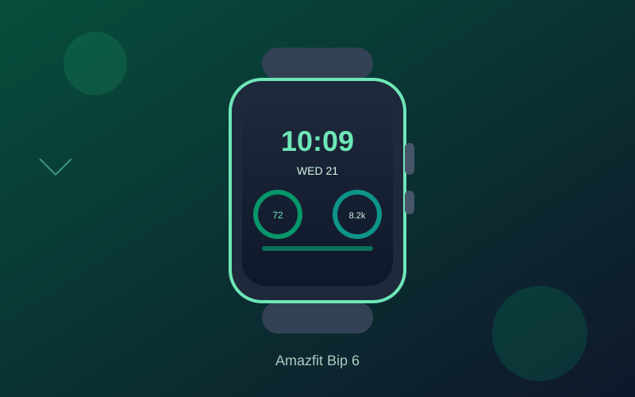

Amazfit Bip 6 Review: Long Battery Life and Bright AMOLED Under $150
The Amazfit Bip 6 packs a large bright display, multi-week battery life, built-in GPS, and capable fitness tracking into a lightweight package that regularly sells well under $100.
In the under-$150 smartwatch market, the Amazfit Bip 6 stands out by delivering features that often cost significantly more. Frequently available around $70 to $90 on Amazon, it offers a practical balance of battery endurance, display quality, and daily fitness tools without unnecessary complexity.
Battery life is the headline feature. Amazfit claims up to 14 days of typical use, and real-world reports commonly land in the 10- to 14-day range depending on GPS use and always-on display settings. That multi-week endurance makes it far more convenient than many premium watches that need nightly charging.
The 1.97-inch AMOLED screen is bright enough for outdoor visibility and large enough to show clear workout data, notifications, and watch faces. Navigation feels responsive, and the lightweight aluminum-alloy frame keeps the watch comfortable for all-day wear, including overnight sleep tracking.
Fitness and health tracking cover the essentials well: continuous heart rate, SpO2, stress monitoring, sleep stages, and more than 140 workout modes. Built-in GPS handles outdoor runs and walks accurately for the price, while Bluetooth calling and message notifications add practical smart features. The Zepp app organizes the data cleanly across Android and iOS.
Trade-offs exist—app store options are more limited than Wear OS watches, and advanced metrics aren’t medical-grade—but for most people seeking reliable daily tracking, long battery life, and strong value, the Bip 6 is one of the most straightforward recommendations under $150.
Key Takeaways
- Price Range: ~$70 – $90 (Amazon)
- Display: 1.97-inch AMOLED, bright and responsive
- Battery: Up to 14 days typical use
- Features: Built-in GPS, 140+ sports modes, heart rate/SpO2/sleep tracking, Bluetooth calling, 5ATM water resistance